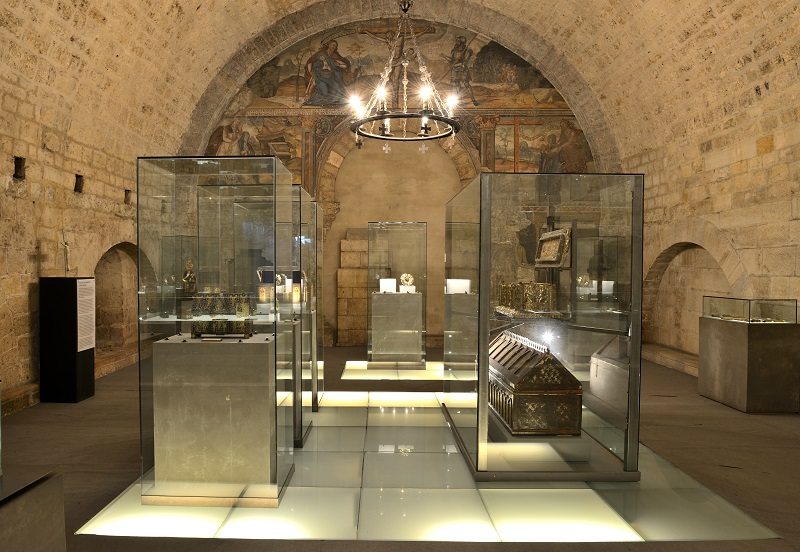
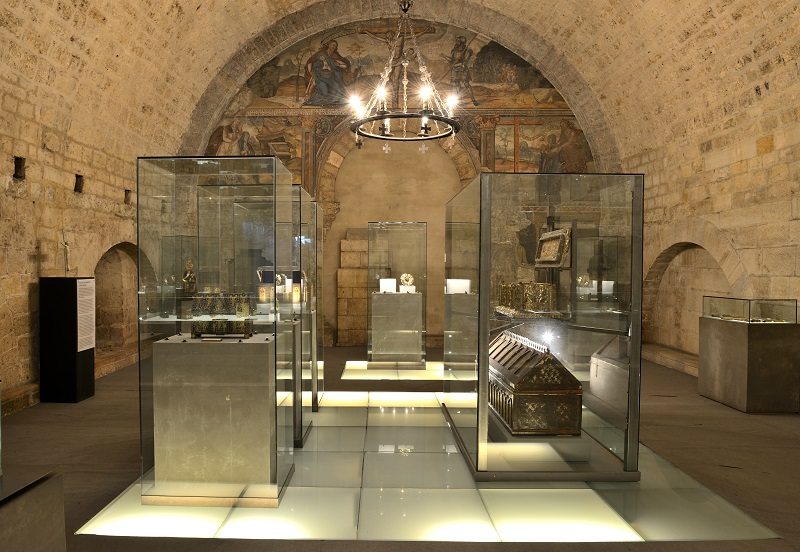
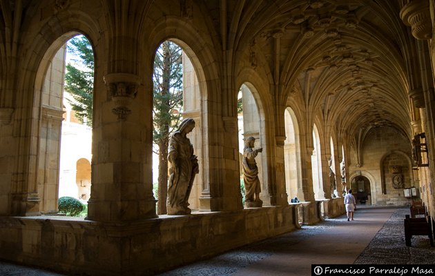
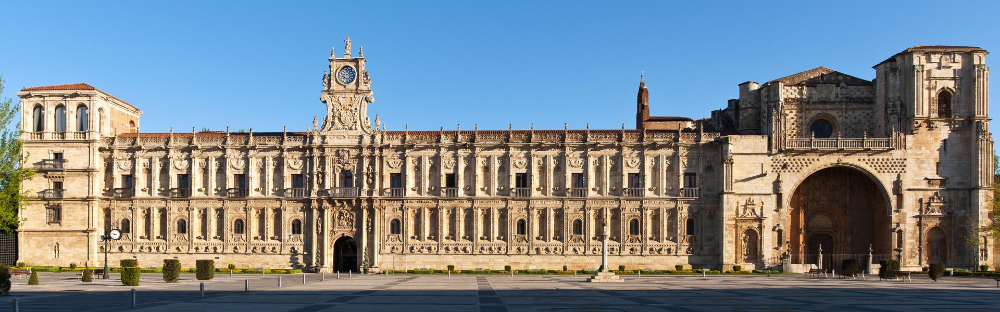
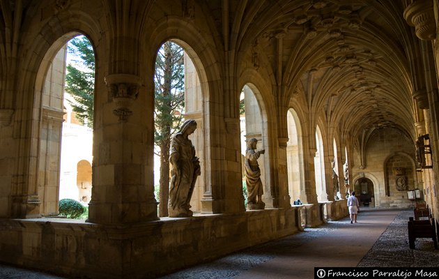
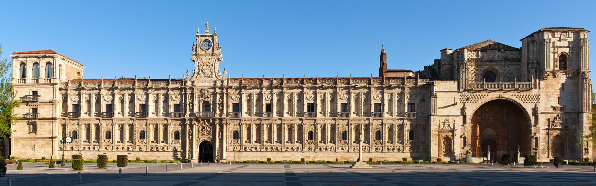

La Bicha
⭐ Morcilla de León
Probablemente la mejor morcilla del mundo. Crujiente por fuera, cremosa por dentro.
📍 Ver en Google MapsGuía de restaurantes, rutas de tapas por el Barrio Húmedo, eventos y lugares imprescindibles de León como la Catedral, San Isidoro, Casa Botines y MUSAC.
Las mejores zonas para comer, tapear y disfrutar de la gastronomía leonesa.
Ruta de tapas por el centro histórico.
Ver guía completaCocido maragato, botillo y cecina.
Ver guía completaEstrella Michelin, Bib Gourmand y opciones modernas.
Ver guía completaCocina de autor y propuestas actuales.
Ver guía completaFerias gastronómicas (provincia), conciertos/cultura (capital) y más eventos.
Lugares imprescindibles con guías completas.
1.800 m² de vidrieras medievales.
Ver guía completaLa “Capilla Sixtina del Románico”.
Ver guía completaObra de Gaudí fuera de Cataluña.
Ver guía completaJoya del plateresco y Museo de León.
Ver guía completaMuseo de Arte Contemporáneo de Castilla y León.
Ver guía completaEl Húmedo no se visita, se sobrevive. La tapa suele venir gratis con la bebida.
Probablemente la mejor morcilla del mundo. Crujiente por fuera, cremosa por dentro.
📍 Ver en Google Maps


Cocido maragato, botillo del Bierzo y cecina de León.


Selección top de cocina de autor en León.
Cocina vanguardista que respeta el producto leonés y lo transforma.
Ubicación: Avenida de los Cubos, 8 (vistas a la muralla).
Tip: “Ideal para ocasiones especiales con vistas a la historia de León”.

Menú único que cambia semanalmente según el mercado. Cocina a la vista.
Ubicación: Plaza de San Marcos, 5 (Casa del Peregrino).

“Cocina con alma de trotamundos”. Muy instagrameable.
Ubicación: Avenida de los Cubos, 48.

Cocina de autor en ambiente relajado, gran relación calidad-precio.
Ubicación: Plaza de San Marcelo, 5.
Cocina de autor y propuestas actuales. (Aquí añadiremos tu lista cuando la pases.)
Evento, lugar, fecha y detalles.
| Evento | Lugar | Fecha 2026 | Detalles para la web |
|---|---|---|---|
| Festival Nacional del Botillo | Bembibre | 7 de febrero | El evento gastronómico del año. Cena de gala y exaltación del embutido rey. |
| XXVI Feria Agroalimentaria | Bembibre Arena | 6 al 8 de febrero | Más de 30 expositores, degustaciones de botillo y productos del Bierzo. |
| Feria de San Blas | Gradefes | 1 de febrero | Tradicional feria agroalimentaria y de maquinaria. |
| Feria de Febrero | Valencia de Don Juan | 19 al 21 de febrero | Una de las ferias de maquinaria agrícola más importantes del noroeste. |
| Jornadas de la Matanza | Diversos puntos | Todo febrero | Fiestas de interés turístico con menús tradicionales (morcilla, jijas, lomo). |
De momento: Mercados (con tabla). Luego añadimos Semana Santa y fiestas locales.
Horario habitual: 9:00 a 14:00 aprox.
| Día | Localidades / Mercado |
|---|---|
| Lunes | Boñar, Carrizo de la Rivera, Valderas. |
| Martes | Astorga (muy tradicional), Villafranca del Bierzo, Mansilla de las Mulas, Laguna de Negrillos. En León capital: Mercado de Colón. |
| Miércoles | León capital (Plaza Mayor - Frutas y verduras), Ponferrada, San Andrés del Rabanedo, Navatejera, Villamañán. |
| Jueves | Valencia de Don Juan, Bembibre, Cistierna, Benavides de Órbigo, Trobajo del Camino. |
| Viernes | La Robla, Villablino, Veguellina de Órbigo. En León capital: Mercado de Colón. |
| Sábado | León capital (Plaza Mayor), Ponferrada (C/ Huertas), La Bañeza, Sahagún, Villaobispo. |
| Domingo | El Rastro de León (Paseo de Papalaguinda - el más grande), Santa María del Páramo (muy famoso por sus productos agrícolas). |
 



 




Si quieres aparecer en la guía, escribe a:
contacto.comeenleon@gmail.com
Cuéntanos qué quieres añadir y, con la mayor brevedad posible, lo publicaremos.